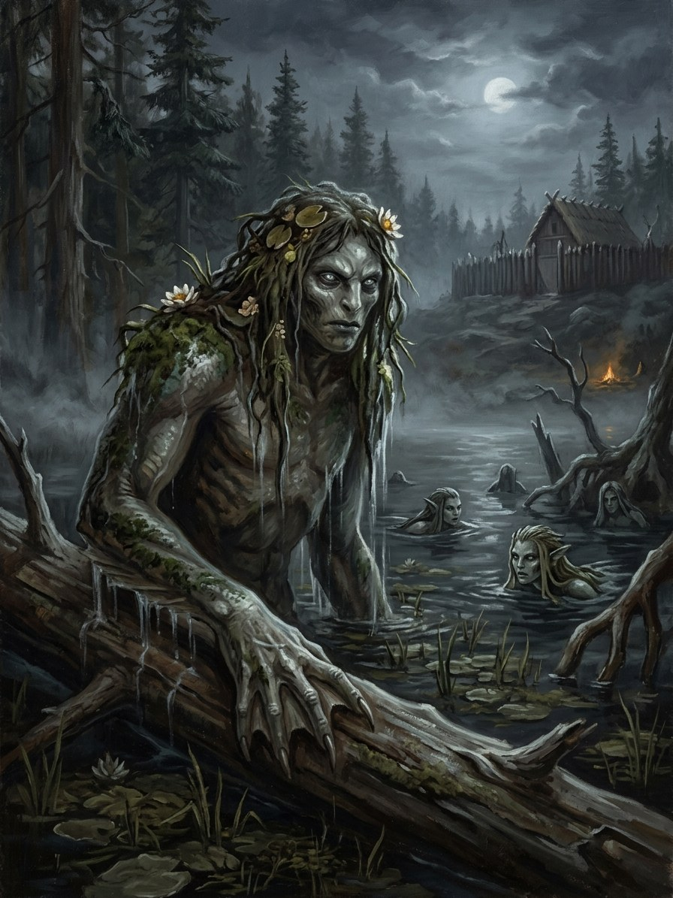

Vandenis and undinės (lake-keepers)¶
Folk source [Historical record]¶
Many Baltic and Slavic communities believed certain lakes and rivers demand a drowning each year and house a water-spirit; vandenis is a Lithuanian name for a male water-spirit. Undinė (water-maiden) is probably a later borrowing shaped by German and literary tradition; older water-maidens overlap with laumės. People offered bread or animals to waters and floated a loaf with a candle to find a drowned body.
Vandenis and undinės (lake-keepers)

Vandenis and undinės (lake-keepers) · creature¶
Tipas |
būtybė |
Status |
Sagos išmonė |
Pastaba |
Bestiary §8. Danger III → IV. |
In the saga (where the folk are half-wrong)¶
Every lake is an eye of the World Tree, and an eye must be kept open: each year a lake takes one life to see through, and the drowned become its vandeniai, looking up at the world through the water. The folk are right about the annual drowning and wrong that it can be avoided; it can only be chosen. The sea’s jūrų mergelės are the remnants of Jūratė’s drowned court and answer, faintly, to the Amber Queen.
Signs & habitat¶
Deep lakes no one has sounded; a spot where the ice never closes; a pale face just under the surface at dusk; a village avoiding one shore in early summer.
Before / after the Unbinding¶
Before: one a year, and villages „gave“ the lake a black rooster or a condemned thief. After: lakes take many, and at the spring ice-break whole carts go through.
Banes, wards, bargains, and their cost¶
An offering at the ice-break (it shortens the wait but does not replace the death). A willing drowning: old people sometimes walked in to spare the young. A line of salt along the shore holds a vandenis for one night (a fortune in salt). The floating loaf finds the body so it can be burned, and the lake is then owed again.
Danger level¶
III dangerous → IV deadly.
Story hooks¶
Book I: Birutė’s ring returned three times by the sea (ch. 11) is a jūrų mergelė refusing a gift. Book V: the Iron Wolf howling in the Trakai lake after Vytautas’s death (ch. 22).
Ryšiai
Servant of: Jūratė — Sea-maidens are the remnants of her drowned court.
Origin [Historical record] lakes and rivers that demand a drowning a year; undinė probably a later borrowing · [The saga's invention] each lake is an eye of the World Tree
Tier Dvasia · the drowned; the sea's jūrų mergelės answer faintly to the Amber Queen
Danger III dangerous → IV deadly
Habitat Deep lakes no one has sounded; the sea's edge; a spot where the ice never closes
Wants One life a year to see through
Takes A drowning that can be chosen, not avoided. After 1387 many, and at the spring ice-break whole carts go through
Signs A pale face just under the surface at dusk; ice that never closes; a village avoiding one shore in early summer
Banes Salt poured in a line along the shore holds a vandenis in the water for one night
Half-wrong truth. The folk are right about the annual drowning. They are wrong that it can be avoided: it can only be chosen.
Eyes of the tree. Every lake is an eye of the World Tree, and an eye must be kept open. The drowned become its vandeniai and look up at the world through the water. The sea-maidens are the remnants of Jūratė's drowned court.
The yearly taking. One life, to see through.
Offering at the ice-break. Bread or a black rooster shortens the wait. It does not replace the death.
A willing drowning. The old sometimes walked in to spare the young.
The salt line. Holds it one night, for a fortune in salt.
The floating loaf. A loaf with a candle finds the body so it can be burned, and the lake is then owed again.
Sąsajos¶
graph LR
jurate["Jūratė"]
vandenis["Vandenis and undinės (lake-keepers)"]
vandenis -->|Servant of| jurate
style vandenis stroke-width:3px